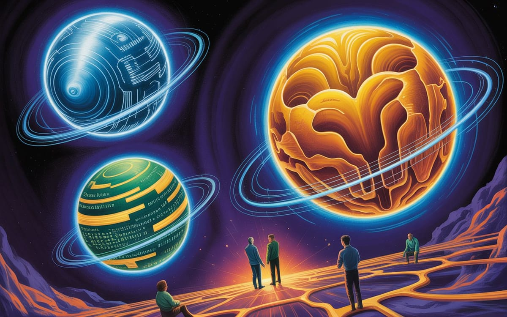

:: Now begins a story...
May I present to you, a finely curated section of a fine collection of the wonderful web we weave with a weekly roundup of bits and pieces from the far corners of the super information highway that I like to call — Token Wisdom ✨


"The quantum revolution allowed us to see the universe more clearly, right before it enabled others to see us more clearly than we ever intended."
— According to Richard Feynman, who theorized quantum computation decades before his notebooks were digitized, indexed, and analyzed by the very systems he helped conceptualize.

Editor's Notes 📆
Week 41 of 52 // October 5th 🧿 October 11th, 2025
Welcome to the 129th edition! This week we explore the quantum frontier—from eco-friendly quantum dots revolutionizing night vision to thermometers measuring quantum entanglement without destroying it. We're examining how quantum tunneling powers everyday smartphones, how mathematicians discover prime number patterns in fractal chaos, and why Signal is fortifying its encryption against future quantum threats.
The convergence of quantum physics, sustainable technology, and privacy concerns reveals a world where scientific advancement continues to disrupt established systems while creating new possibilities for energy production, surveillance, and security.

🔮 Pearls of Wisdom, The Latest Edition...
Get smart, fast. If you're pressed for time and want to keep up to date!
Enjoy The Newest Latest, A Closer Look & Time Well Spent!

🎉 Newest / Latest
100% Authentic Humanly Chosen

Quantum Frontiers, Mathematical Discoveries, and Technological Innovations
This week's collection examines how quantum physics is transforming everyday technology, how mathematical breakthroughs are revealing hidden patterns in nature, and how innovative approaches to energy and surveillance are reshaping our relationship with technology. From night vision to cryptography to solar-powered drones, we're witnessing how fundamental science drives practical innovation.
- Tiny Quantum Dots Could Transform How We See in the Dark
Scientists have created eco-friendly "quantum inks" that can replace toxic metals in infrared detectors. The breakthrough could make night vision faster, cleaner, and more accessible to a wider range of industries.Read more at SciTechDaily - A Thermometer for Measuring Quantumness
"Anomalous" heat flow, which at first appears to violate the second law of thermodynamics, gives physicists a way to detect quantum entanglement without destroying it.Learn more at Quanta Magazine - The Incredible Quantum Mechanics That Helps Power Your Smartphone Just Won a Nobel Prize
Quantum tunneling is a fascinating concept that has informed how much of today's digital technology works.Explore at Gizmodo - Alexander Skarsgård Showcases the 871-HP Polestar 5 in New Film
Built on Polestar's bonded-aluminum platform, the electric GT delivers supercar stiffness, 3.2-second acceleration, and Scandinavian style.Read at Autoweek - Mathematicians Discover Prime Number Pattern in Fractal Chaos
Mathematicians have found a new way to predict how prime numbers behave.Discover at Scientific American - Goodbye to the Limits of Solar Power—New Photovoltaic Drone Aims to Achieve 90-Day Flights
The advances in photovoltaic technology are making it the most widely used type of renewable energy source, with applications now extending to surveillance drones capable of extremely long flight times.Learn more at La Grada Online - At Harvard Talk, World Wide Web Inventor Tim Berners-Lee Says Today's Internet Exploits Users for Data
Tim Berners-Lee, the inventor the World Wide Web, criticized the state of the internet today for turning users into "consumable products" in a talk at Harvard Square.Read at The Harvard Crimson - Signal Adds New Cryptographic Defense Against Quantum Attacks
Signal announced the introduction of Sparse Post-Quantum Ratchet (SPQR), a new cryptographic component designed to withstand quantum computing threats.Explore at Bleeping Computer - Scientists Made Light Speed Visible. The Images Are Amazing.
The method involves stitching together many thin "slices" of light reflecting off an object.Discover at Popular Mechanics - Cows Wear High-Tech Collars Now
The wearables help dairy farmers gather more data so their animals are happier and produce more milk.Learn more at The New York Times
*CAUTION: Side effects might include having your smartphone quantum tunnel into an 871-HP Polestar 5, finding yourself managing a 90-day solar-powered drone surveillance network, or accidentally discovering that your personal data is being rerouted through Tim Berners-Lee's quantum thermometer. You may also develop an inexplicable ability to see in the dark using only your wristwatch and a properly angled quantum entanglement detector.
This uncanny prediction is endorsed by the Association of Quantum-Enhanced Night Vision Systems Currently Hiding from Data-Mining Algorithms, approved by a consortium of solar-powered drone enthusiasts, and verified by a mysterious prime number algorithm that runs on high-tech cow collar electricity.
👁️ A Closer Look
Unearthing gems in the digital landscape.

Because in the ever-evolving tech world, there's always more to learn and laugh about.
Mirror World of the Three-Body Problem
We're Not Building AI, We're Crystallizing Intelligence Itself
What if our AI systems aren't just tools, but part of a chaotic three-body system we can't control? In this week's essay, I reveal how we've unwittingly created a third computational substrate—"knowware"—that follows mathematical patterns similar to celestial bodies. This isn't science fiction; it's happening now as knowledge crystallizes into infrastructure. Discover why traditional AI governance is doomed to fail and what we must do instead to navigate this new reality.
The mathematics of inevitability: when patterns become infrastructure
 🌶️ iamkhayyam
🌶️ iamkhayyam
A Closer Look: Explorations in Technology
Weekly essay in the areas of blockchain, artificial intelligence, extended reality, quantum computing, and all the bits and pieces.

A Closer Look: Explorations in Technology
Weekly essay in the areas of blockchain, artificial intelligence, extended reality, quantum computing, and all the bits and pieces.


📺 Time Well Spent
Top Ten of the Time I Spend

From Chaos Theory to Computing Flaws: Intellectual Adventures in Science and Design
This week's video collection explores fundamental questions about chaos, computing security, and innovative design. We journey from the mathematical patterns in nature to the vulnerabilities in our computing infrastructure, examining how creative minds reshape our understanding of the world and craft technological solutions to complex problems.
- The Strangest Job Market Collapse in History Has Just Started…
An analysis of economic trends and employment market disruptions driven by technological change. Watch on YouTube - Would You Live in this Home Inside a Pyramid Greenhouse?
A design exploration of a northern climate home enclosed within a pyramid greenhouse structure that allows year-round cultivation.View on YouTube - The Secret Life of Chaos | The Math Behind Nature
Physicist Jim Al-Khalili explores chaos theory and how seemingly random patterns in nature follow mathematical principles.Explore on YouTube - The Original Sin of Computing...That No One Can Fix
A deep dive into fundamental security vulnerabilities in computing that persist despite source code transparency.Learn more on YouTube - Nobody Gets to Rewrite the Constitution
A discussion about war powers, constitutional authority, and concerns about executive overreach. Watch on YouTube - The Genius Design of Brutalist Housing
A reexamination of once-maligned concrete architectural giants like Trellick Tower and Barbican Estate, revealing their radical design innovations. View on YouTube - Why Texas Instruments Is Betting $60 Billion On Making Cheap Chips In The U.S.
An exploration of TI's massive manufacturing investment where even Apple plans to source "critical foundation semiconductors." Explore on YouTube - The Misunderstood Nature of Entropy
A clarification of entropy and the second law of thermodynamics, addressing common misconceptions.Learn more on YouTube - The Hack That Exposed 500M Travelers
The story of how hackers infiltrated Starwood's reservation servers for four years, stealing travel records and personal data. Watch on YouTube - 'This Is What Our Government Does Now': Matt Taibbi Sounds Off On Mass Surveillance By The Govt
Journalist Matt Taibbi discusses the TSA's Quiet Skies Program and concerns about government surveillance. Discover on YouTube
*This remarkable skill set has been certified by the League of Chaos-Embracing Architects Currently Building Quantum-Resistant Housing While Studying Entropy, verified by an ensemble of Texas Instruments engineers using reservation system data, and approved by the Society for Predicting Economic Collapses Through Constitutional Interpretation.
CAUTION: Please exercise discretion when attempting to apply chaos theory principles to job market predictions, use entropy to explain surveillance programs, or design brutalist housing with pyramid greenhouses. The digital pioneers in Silicon Valley neither confirm nor deny these findings, being preoccupied with fixing the original sin of computing while avoiding mass surveillance that knows their next move.

✨Token Wisdom
Knowledge Transmuted
In this 129th edition of Token Wisdom, we've explored the fascinating interplay between quantum physics and practical applications. Side A's "The Newest Latest" reveals how quantum principles are being harnessed in everything from night vision technology to smartphone components, while mathematical breakthroughs continue to reveal hidden patterns in nature.
Our insights span from eco-friendly quantum dots revolutionizing infrared detection to Signal's forward-thinking implementation of post-quantum cryptography. The tension between technological advancement and privacy concerns exemplifies our ongoing struggle to balance innovation with security and ethics.
We also witness remarkable technological breakthroughs that could reshape our energy landscape and surveillance capabilities. From solar-powered drones capable of 90-day flights to techniques that make light speed visible, we're seeing how novel approaches to persistent challenges are creating new possibilities.
This week's journey shows how fundamental science continues to drive practical innovation. The visualization of light speed, cow-monitoring wearable technology, and even Tim Berners-Lee's concerns about data exploitation remind us that innovation occurs across all scales—from quantum dots to internet infrastructure.
At this intersection of quantum frontiers, mathematical discovery, and technological innovation, we must balance progress with awareness of its consequences. Our goal: to harness scientific advancement for broad benefit while understanding the ethical implications it creates, fostering a future where technology serves humanity rather than merely exploiting our data and privacy.

🌈💫 The Less You Know
The More You Learn
Latest Technologies & Innovations:
- Eco-Friendly Quantum Dots: Non-toxic infrared detection for night vision
- Quantum Entanglement Measurement: Non-destructive thermometer for quantum states
- Quantum Tunneling Applications: Nobel Prize-winning physics in everyday electronics
- Electric GT Technology: High-performance electric vehicles with aluminum platforms
- Solar-Powered Surveillance Drones: 90-day flight capability with photovoltaic systems
- Post-Quantum Cryptography: Signal's SPQR for quantum-resistant messaging
- Light Speed Visualization: Technique for capturing images of light in motion
- Smart Cow Collars: AI-enhanced wearables for livestock monitoring
- Pyramid Greenhouse Design: Sustainable architecture for year-round cultivation
- U.S. Semiconductor Manufacturing: Domestic production of foundation chips
Most Important Topics:
- Quantum Security Applications: Post-quantum encryption for communications
- Mathematical Pattern Discovery: Prime numbers behavior in fractal systems
- Sustainable Night Vision: Eco-friendly alternatives to toxic materials
- Long-Duration Surveillance: Extended flight capabilities of solar drones
- Data Privacy Concerns: Web inventor's critique of user exploitation
- Architectural Innovation: Reexamining brutalist design principles
- Domestic Chip Production: Strategic semiconductor manufacturing investments
- Government Surveillance Programs: TSA's Quiet Skies monitoring system
- Computing Security Fundamentals: Unresolvable vulnerabilities in systems
- Chaos Theory Applications: Mathematical understanding of natural patterns
Acronyms:
- SPQR - Sparse Post-Quantum Ratchet
- TSA - Transportation Security Administration
- HP - Horsepower
- GT - Grand Tourer
- TI - Texas Instruments
Technical Terms:
- Quantum Dots: Nanoscale semiconductor particles with quantum properties
- Quantum Tunneling: Quantum phenomenon where particles pass through energy barriers
- Quantum Entanglement: Quantum state where particles remain connected
- Prime Number Pattern: Mathematical regularities in prime number distribution
- Fractal Chaos: Self-similar patterns emerging from chaotic systems
- Photovoltaic Technology: Direct conversion of light to electricity
- Brutalist Architecture: Architectural style featuring exposed concrete forms
- Entropy: Measure of disorder or randomness in a system
- Post-Quantum Cryptography: Encryption resistant to quantum computing attacks
- Compiler Backdoor: Security vulnerability in software compilation process
Just because Jon Snow knows nothing, doesn’t mean you have to.
Embrace the pursuit of knowledge to shape a better tomorrow. Sign up for more Token Wisdom and carry the torch of foresight into the fathomless domains of innovation and beyond.
"The most profound scientific revelations aren't those we anticipate, but those that silently reshape existence before we even grasp their meaning."
— Token Wisdom ✨
Until next time: stay smart, and kind, and definitely stay weird!
Become a Token Wisdom subscriber
Illuminate your inbox with the light of knowledge. ✨

Thank you for cruising by the Cult of Innovation
We’re making some Stone Soup here. If you enjoyed this amuse-bouche of news compilations in bite-sized morsels, please share it with your friends and help feed a community. Mmmm. #nomnom.